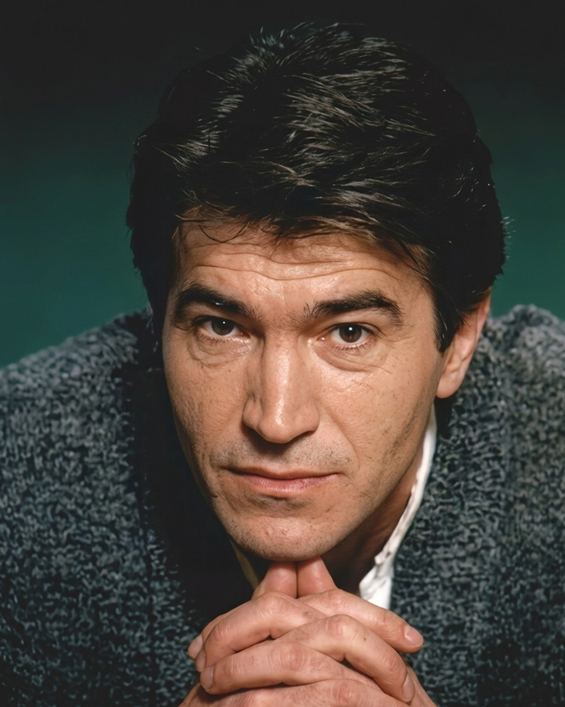

On May 9, 1998, Vlado Janevski closed the Eurovision Song Contest in Birmingham with “Ne zori, zoro.” Twenty-four entries had preceded him. His was the first to represent independent Macedonia on the televised Eurovision stage, and the first sung in Macedonian.
The song was a plea to delay the morning. Composed by Grigor Koprov, with lyrics by Janevski, it concerned a troubled love affair, family opposition, and a man drinking through the night. Macedonia had chosen a familiar kind of lament for an unfamiliar occasion: its debut in a competition it had already tried to enter two years earlier.
That earlier attempt belonged to Kaliopi. In 1996, she was selected to perform “Samo ti,” but an audio-only qualifying round decided which countries would reach the televised final. The song did not advance. Macedonia’s first Eurovision entry existed as a recording; viewers of the final never saw it performed.
Janevski therefore arrived in Birmingham with a distinction that Kaliopi had been denied. Whatever happened in the voting, his performance would become the starting point of the country’s televised Eurovision history.
He already had a career behind him. Born in Skopje in 1960, Janevski had played in bands before establishing himself as a solo singer. His first album, Parče duša, appeared in 1993. A Makfest victory with “Eden baknež” followed in 1994. By the time he entered the 1998 national selection, he was an established figure in Macedonian pop.
The selection took place on March 7 at Universal Hall in Skopje. Twenty songs competed, with the winner chosen by telephone vote. Kaliopi returned to the contest. Karolina Gočeva was in the lineup, as were Dule & Koki, Suzana Spasovska, and a young Toše Proeski performing with Megatim Plus.
The list is striking in retrospect. Several singers who would later represent Macedonia at Eurovision were competing for the same place that evening. Karolina finished fourth, Toše eighth, and Kaliopi ninth. Janevski won with 38,642 votes, ahead of Sašo Gigov-Giš’s 34,774 for “Samovilska svadba.”
The result sent a solo balladeer to Birmingham. The song’s English version was titled “Somebody Stop the Dawn.” Janevski would perform the Macedonian original.